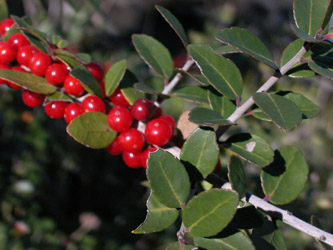

Previous || Next || Return to Mystery Plants || USC Herbarium
This Week's Mystery Plant | Dr. John B. Nelson Curator, USC Herbarium |
|
Lots of people in the Southeast grow this plant as a shrub or hedge without really knowing its identity. It is a native evergreen, and it is widely cultivated as a popular yard plant; there are several popular horticultural forms. Some of these forms resemble the common boxwood, which is unrelated to our mystery plant. (All boxwoods have their leaves occurring in pairs. Our plant has leaves alternating singly on the stems.) It grows naturally from Virginia to eastern Texas. In the Carolinas, it is a coastal plain plant, commonly seen in maritime forests. If left unpruned, it can become a small tree. On larger plants the bark is attractive, smooth and grey. The plants are evergreen, bearing small, leathery leaves, which snap if bent end to end. The margins of the leaves are shallowly scalloped; this sort of leaf margin is said to be "crenate." The flowers are small and white, and not particularly showy…but the female plants produce beautifully conspicuous red, and potentially poisonous, berries. (Some varieties have yellow fruits.) In addition to being a very pleasing landscape plant, this native has had an additional interesting association with humans: a considerable amount of caffeine is available from the dried leaves. Native Americans apparently used brews of the leaves as a beverage. Traditional history indicates, as well, that very strong versions (or perhaps very large doses) of these brews were sometimes used in ceremonial events as a way of purging the system through vomiting. (The scientific name alludes to this tradition.) Otherwise, the plant actually became rather important through much of the South, at least into the early 1800's, and then again during the Civil War, as an acceptable tea. It is sometimes still served today. |
 Photo by Linda Lee |